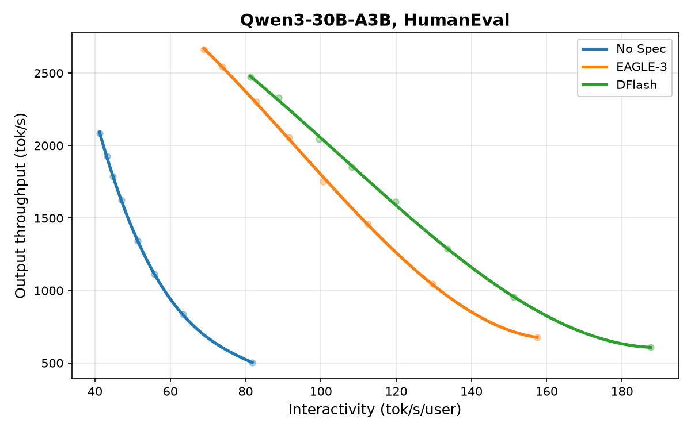
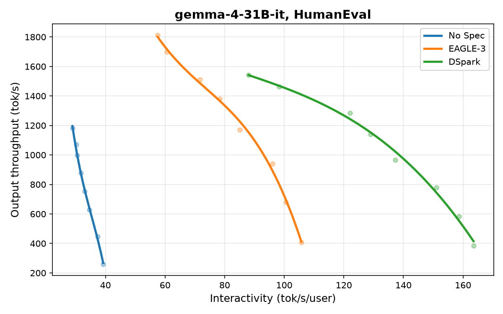
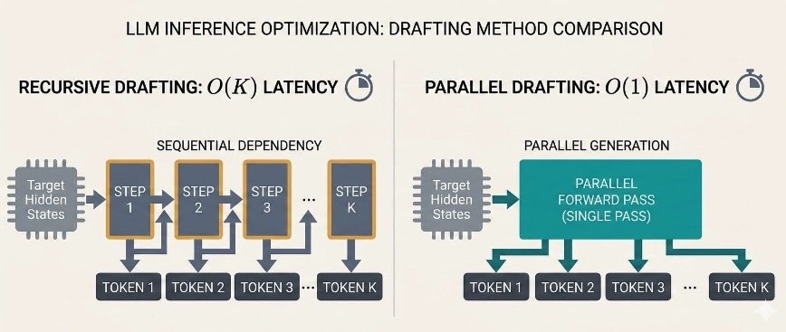

投机解码已成为缓解大语言模型（LLM）服务中内存带宽瓶颈的核心优化技术。通过在单次验证模型前向传播中验证多个候选令牌，它使生产系统能够实现显著的推理加速。
然而，随着服务基础设施的发展，传统投机框架面临源于草稿令牌生成方式的结构性天花板。我们很高兴展示 Speculators 与 vLLM 如何通过为三种最先进的并行草稿算法提供完整开源支持来突破这些限制：P-EAGLE、DFlash 和 DSpark。
投机解码已成为缓解大语言模型（LLM）服务中内存带宽瓶颈的核心优化技术。通过在单次验证模型前向传播中验证多个候选令牌，它使生产系统能够实现显著的推理加速。
然而，随着服务基础设施的发展，传统投机框架面临源于草稿令牌生成方式的结构性天花板。我们很高兴展示 Speculators 与 vLLM 如何通过为三种最先进的并行草稿算法提供完整开源支持来突破这些限制：P-EAGLE、DFlash 和 DSpark。


EAGLE 和 MTP 等框架的引入标志着投机解码范式的重大转变。EAGLE 表明，投机器架构可以直接利用验证模型丰富的内部隐藏状态，而不是迫使投机器模型仅从表面文本盲目猜测，从而显著提高令牌接受率。
尽管取得了这一突破，EAGLE-3 等高级迭代版本仍受制于一个基本约束：自回归草稿。为了提出候选令牌序列，投机器架构必须逐个生成它们，对每个令牌执行一次独立的前向传播。
这种自回归设计在生产中引入了两个主要权衡：
模型规模约束：由于草稿生成成本与推测长度呈线性增长，推测模型被迫保持极小且轻量，以避免消耗验证模型验证期间节省的执行时间。
复杂的运维调优：线性扩展在实践中严重限制了草稿 token 的数量。选择最优推测长度 (K) 成为一个敏感变量，工程团队必须根据具体用例和实时服务器负载不断调整。

并行草稿生成通过完全消除草稿阶段的顺序执行，从根本上重新设计了这个权衡。并行草稿算法不是循环执行单 token 生成步骤，而是并发预测整个候选 token 块。
通过将草稿阶段压平为单次前向传播，生成提案的延迟与推测的 token 数量解耦。这种架构转变通过两种不同方式简化了生产服务：
表达能力容量：由于推测模型每个块只运行一次，开发者可以利用更大、更稳健、更具表达力的草稿架构。这些更深的推测模型捕捉更复杂的上下文，并在不引入顺序延迟惩罚的情况下获得更高的接受率。
简化参数调优：将草稿生成成本与块长度解耦，免除了根据波动的服务器负载对推测参数进行超参数调优的运维负担。
并行草稿生成这一概念此前已有探索——Medusa 和 PARD 是早期典型例子。P-EAGLE、DFlash 和 DSpark 在此基础上，将并行执行与深层验证器状态条件化相结合，这正是 EAGLE 成功的关键。
P-EAGLE、DFlash 和 DSpark 均基于验证器模型的隐藏状态并行生成草稿 token，但各自采用不同路径。图 3 并列展示了它们的架构。

三者共有的挑战是训练。任何并行推测器都必须沿训练序列的每个 token 位置执行 next-K 预测。对于长度为 N 的序列和 K 的展望窗口，若朴素地计算整个矩阵上的损失，内存和计算成本将高得不可接受。每种算法以不同方式解决这一问题。
P-EAGLE 直接基于 EAGLE 将验证器模型的隐藏状态用作输入特征这一基础。它不是顺序消费这些特征来预测 token，而是同时将它们映射到多个未来位置，在单个并行步骤中输出整段候选 token 序列。
为了使训练易于处理，P-EAGLE 实现了草稿块稀疏化：它按照衰减率沿展望维度（K）丢弃 token，将优化集中在最关键的近期 token 上，同时从损失计算中剪除较远的未来位置。
DFlash 以不同方式路由验证器特征。它并非将隐藏状态作为标准输入送入，而是将隐藏状态投影后直接注入投机器模型的 KV-cache。这在不扩展输入序列长度的情况下，将投机器的注意力机制紧密地以验证器的确切状态为条件，从而使其能够通过块扩散生成高度准确的候选 token 块。
对于训练，DFlash 实现了序列长度稀疏化。它不是在长度为 N 的序列中的每个 token 位置计算块损失，而是沿时间线选择随机锚点，并仅在这些交点处计算块预测——从而在保持代表性覆盖的同时节省 GPU 内存。
DSpark 采用 DFlash 的并行骨干，并在此基础上叠加了两项额外创新。首先，它通过一个轻量级的自回归校正头增强架构，使未来的 token 能够更强地以过去的 token 为条件。这结合了并行生成的吞吐优势与自回归细化（refinement）的顺序连贯性。
其次，DSpark 解决了下游瓶颈：验证成本。并行草稿可以低成本地生成大量草稿 token，但验证器仍然必须处理所有这些 token。DSpark 引入了一个置信头，在草稿 token 到达验证器之前对其进行评分，只选择性地转发那些可能被接受的 token。这减少了浪费的验证计算，并提升了端到端吞吐。
图 1 展示了并行草稿算法与 EAGLE-3 相比带来的性能提升。图中展示了三种不同的模型和并行草稿算法。
在所有这些情况下，并行草稿都比 EAGLE-3 显示出显著的改进。性能会因模型、任务和硬件配置而异——我们鼓励社区在自己的工作负载上进行基准测试。
将最先进的并行草稿算法集成到生产中需要稳定、优化的基础设施栈。Speculators 仓库提供了一个统一的生态系统，用于训练和评估这些下一代模型，并与 vLLM 完全集成。
启动一个基于并行草稿的投机引擎只需在初始化时传递适当的配置标志：
vllm serve Qwen/Qwen3-30B-A3B \
--tensor-parallel-size 2 \
--reasoning-parser qwen3 \
--speculative-config '{
"model": "RedHatAI/Qwen3-30B-A3B-speculator.dflash",
"num_speculative_tokens": 7,
"method": "dflash"
}'并行草稿目前完全支持、开源且可用于生产环境。以下资源可供上手：
仓库：Speculators
预训练投机模型：HuggingFace 上的 Speculators 集合
训练指南：Speculator 教程
图 1 中的图表已于 7/29 更新。由于错误的环境配置，原始图表中的数字与报告的基准测试条件不一致。然而，模型之间的相对行为是一致的，博客中的结论没有改变。
参考：https://vllm.ai/blog/2026-07-28-speculators-parallel-drafting